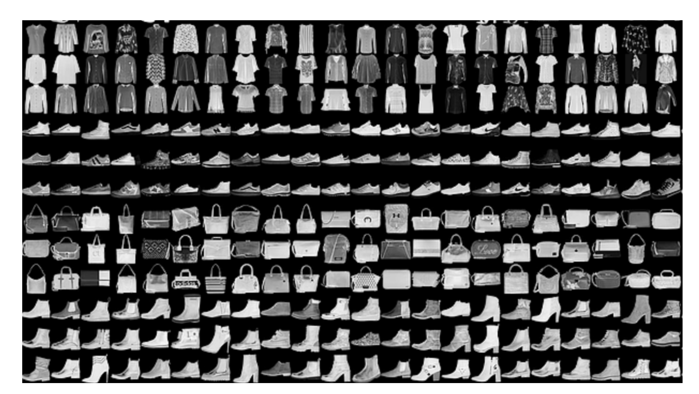

Classification of clothes
This is also one of the first datasets one can encouter to practice image classification, low resolution images of clothes that the model must learn to distinguish
# import libraries
import numpy as np
import torch
import torch.nn as nn
import torch.nn.functional as F
from torch.utils.data import DataLoader,TensorDataset,Subset
import copy
from sklearn.model_selection import train_test_split
# for importing data
import torchvision
import torchvision.transforms as T
import matplotlib.pyplot as plt
from IPython import display
from matplotlib_inline.backend_inline import set_matplotlib_formats
# use GPU if available
device = torch.device('cuda:0' if torch.cuda.is_available() else 'cpu')
# transformations
transform = T.Compose([ T.ToTensor(),
T.Normalize(.5,.5)
])
# import the data and simultaneously apply the transform
trainset = torchvision.datasets.FashionMNIST(root='./data', train=True, download=True, transform=transform)
devset = torchvision.datasets.FashionMNIST(root='./data', train=False, download=True, transform=transform)
# transform to dataloaders
batchsize = 32
train_loader = DataLoader(trainset,batch_size=batchsize,shuffle=True,drop_last=True)
dev_loader = DataLoader(devset, batch_size=batchsize,shuffle=True,drop_last=True) # note: devtest in batches!
categories=trainset.classes
labels=trainset.targets
# inspect a few random images
X,y = next(iter(train_loader))
fig,axs = plt.subplots(4,4,figsize=(10,10))
for (i,ax) in enumerate(axs.flatten()):
# extract that image (need to transpose it back to 32x32x3)
pic = np.squeeze(X.data[i])
pic = pic/2 + .5 # undo normalization
# and its label
label = categories[y[i]]
# and show!
ax.imshow(pic, cmap="gray")
ax.text(16,0,label,ha='center',fontweight='bold',color='k',backgroundcolor='y')
ax.axis('off')
plt.tight_layout()
plt.show()
During traning we give the images as they are and for the labels their respective class, at the end the model creates the relationships between the clothes and the labels they receive
# create a class for the model
def makeTheNet(printtoggle=False):
class cifarnet(nn.Module):
def __init__(self,printtoggle):
super().__init__()
# print toggle
self.print = printtoggle
### -------------- feature map layers -------------- ###
# first convolution layer
self.conv1 = nn.Conv2d(1,32,3,padding=1)
self.bnorm1 = nn.BatchNorm2d(32) # input the number of channels in this layer
# output size: 28/2 = 14 (/2 b/c maxpool)
# second convolution layer
self.conv2 = nn.Conv2d(32,64,3,padding=1)
self.bnorm2 = nn.BatchNorm2d(64) # input the number of channels in this layer
# output size: 14/2 = 7 (/2 b/c maxpool)
# third convolution layer
self.conv3 = nn.Conv2d(64,128,3,padding=1)
self.bnorm3 = nn.BatchNorm2d(128) # input the number of channels in this layer
# output size: 7/2 = 3 (/2 b/c maxpool)
### -------------- linear decision layers -------------- ###
self.fc1 = nn.Linear(3*3*128,128)
self.fc2 = nn.Linear(128,64)
self.fc3 = nn.Linear(64,32)
self.fc4 = nn.Linear(32,10)
def forward(self,x):
if self.print: print(f'Input: {list(x.shape)}')
# first block: convolution -> maxpool -> batchnorm -> relu
x = F.max_pool2d(self.conv1(x),2)
x = F.leaky_relu(self.bnorm1(x))
if self.print: print(f'First CPR block: {list(x.shape)}')
# second block: convolution -> maxpool -> batchnorm -> relu
x = F.max_pool2d(self.conv2(x),2)
x = F.leaky_relu(self.bnorm2(x))
if self.print: print(f'Second CPR block: {list(x.shape)}')
# second block: convolution -> maxpool -> batchnorm -> relu
x = F.max_pool2d(self.conv3(x),2)
x = F.leaky_relu(self.bnorm3(x))
if self.print: print(f'Third CPR block: {list(x.shape)}')
# reshape for linear layer
nUnits = x.shape.numel()/x.shape[0]
x = x.view(-1,int(nUnits))
# linear layers
x = F.leaky_relu(self.fc1(x))
x = F.leaky_relu(self.fc2(x))
x = F.leaky_relu(self.fc3(x))
x = self.fc4(x)
if self.print: print(f'Final output: {list(x.shape)}')
return x
# create the model instance
net = cifarnet(printtoggle)
# loss function
lossfun = nn.CrossEntropyLoss()
# optimizer
optimizer = torch.optim.Adam(net.parameters(),lr=.001)
return net,lossfun,optimizer
# test the model with one batch
net,lossfun,optimizer = makeTheNet(True)
X,y = next(iter(train_loader))
yHat = net(X)
# check size of output
print('\nOutput size:')
print(yHat.shape)
# # now let's compute the loss
loss = lossfun(yHat,torch.squeeze(y))
print(' ')
print('Loss:')
print(loss)
# a function that trains the model
def function2trainTheModel():
# number of epochs
numepochs = 10
# create a new model
net,lossfun,optimizer = makeTheNet()
# send the model to the GPU
net.to(device)
# initialize losses
trainLoss = torch.zeros(numepochs)
devLoss = torch.zeros(numepochs)
trainAcc = torch.zeros(numepochs)
devAcc = torch.zeros(numepochs)
# loop over epochs
for epochi in range(numepochs):
# loop over training data batches
net.train()
batchLoss = []
batchAcc = []
for X,y in train_loader:
# push data to GPU
X = X.to(device)
y = y.to(device)
# forward pass and loss
yHat = net(X)
loss = lossfun(yHat,y)
# backprop
optimizer.zero_grad()
loss.backward()
optimizer.step()
# loss and error from this batch
batchLoss.append(loss.item())
batchAcc.append( torch.mean((torch.argmax(yHat,axis=1) == y).float()).item() )
# end of batch loop...
# and get average losses and error rates across the batches
trainLoss[epochi] = np.mean(batchLoss)
trainAcc[epochi] = 100*np.mean(batchAcc)
### test performance
net.eval()
batchAcc = []
batchLoss = []
for X,y in dev_loader:
# push data to GPU
X = X.to(device)
y = y.to(device)
with torch.no_grad(): # deactivates autograd
yHat = net(X)
loss = lossfun(yHat,y)
# loss and accuracy from this batch
batchLoss.append(loss.item())
batchAcc.append( torch.mean((torch.argmax(yHat,axis=1) == y).float()).item() )
# end of batch loop...
# get loss and error rate from the test batch
devLoss[epochi] = loss.item()
devAcc[epochi] = 100*np.mean(batchAcc)
# end epochs
# function output
return trainLoss,devLoss,trainAcc,devAcc,net
# ~3 minutes with 10 epochs on GPU (8 mins on the CPU!)
trainLoss,devLoss,trainAcc,devAcc,net = function2trainTheModel()
net.eval() # switch to test mode
X,y = next(iter(dev_loader))
# push data to GPU
X = X.to(device)
y = y.to(device)
# forward pass and loss
with torch.no_grad():
yHat = net(X)
loss = lossfun(yHat,y)
# loss and accuracy from this batch
testLoss = loss.item()
testAcc = 100*torch.mean((torch.argmax(yHat,axis=1) == y).float()).item()
fig,ax = plt.subplots(1,2,figsize=(16,5))
ax[0].plot(trainLoss,'s-',label='Train')
ax[0].plot(devLoss,'o-',label='Dev')
ax[0].plot(len(devLoss)-1,testLoss,'r*',markersize=15,label='Test')
ax[0].set_xlabel('Epochs')
ax[0].set_ylabel('Loss (CEL)')
ax[0].set_title('Model loss')
ax[1].plot(trainAcc,'s-',label='Train')
ax[1].plot(devAcc,'o-',label='Dev')
ax[1].plot(len(devAcc)-1,testAcc,'r*',markersize=15,label='Test')
ax[1].set_xlabel('Epochs')
ax[1].set_ylabel('Accuracy (%)')
ax[1].set_title(f'Final model dev/test accuracy: {devAcc[-1]:.2f}/{testAcc:.2f}%')
ax[1].legend()
plt.show()
# inspect a few random images
lastPhotos=X[0:16]
trueObjects=y[0:16]
predictions=torch.argmax(yHat[0:16],axis=1)
categories=trainset.classes
fig,axs = plt.subplots(4,4,figsize=(10,10))
for (i,ax) in enumerate(axs.flatten()):
# extract that image (need to transpose it back to 32x32x3)
pic = np.squeeze(lastPhotos[i].cpu())
pic = pic/2 + .5 # undo normalization
# and its label
label = categories[trueObjects[i]]
myGuess=categories[predictions[i]]
# and show!
ax.imshow(pic, cmap="gray")
ax.text(16,0,label,ha='center',fontweight='bold',color='k',backgroundcolor='y')
ax.text(16,29,myGuess,ha='center',fontweight='bold',color='k',backgroundcolor='y')
ax.axis('off')
plt.tight_layout()
plt.show()
At the end I show some results, at the top is the true label, at the bottom the prediction of the model, at this time, It happens that the images to show are all correct but the model got a few grong as seen by the plot of accuracy